Living
in Ancient Egypt
Page
5 of 5
The
Landscape
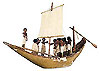
Wooden
model boat, EA 25360
(from the study collection) |
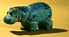
Glazed composition hippopotamus, EA 59777 |
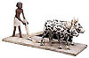
Wooden model of ploughing, EA 52947 |
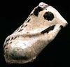
Glazed
composition Gerboa, EA 37097
(from the study collection) |
|
The
landscape
of modern Egypt provides a link with ancient Egypt, but even this
has changed. Since ancient times new crops, irrigation methods and
settlement patterns have been introduced. The way in which Egyptian
culture conceptualised their landscape and its animals shows us
their view of the world, even though landscape is not a major theme
in Egyptian art.
The Nile, which was known simply as `the river', dominated the Egyptian's
world-view, and it was uniquely important as a source of food, water,
and transport. The river landscape was like western pastoral world,
a place of recreation and lovemaking as well as an economic resource,
and river plants decorate many artefacts. It was also a potentially
dangerous place, and river animals such as crocodiles and hippopotami
were greatly feared.
The
Nile was flanked by fertile land, sustained by the annual inundation.
The ancient year was divided into three seasons, the season of the
flood, of the emergence of the land from the waters, and the hot
harvest season. Two thirds of the usable agricultural land was in
the Delta, a landscape dominated by flat flood plains. Most of the
ancient population were agricultural labourers.
The
country was a river oasis in the middle of the desert, which rises
in hills above the valley. The desert is sharply distinct, and was
regarded as a foreign and alien place, with the red sand being opposed
to the fertile black silt of Egypt (the `Red Land' and the `Black
Land'). It was the place where the dead were buried, and animals
that could survive desert were often evoked in tomb-statues, in
the hope that the dead would survive the desert of death in same
way.
|
Household
and Entertainment
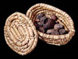
Basket
of dates and figs,
EA 5396 |
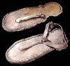
Child's
leather sandals,
EA 26780 |
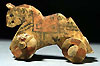
Wooden
toy horse,
EA 26687 |
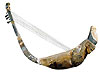
Model harp, EA 24564 |
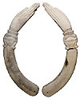
Ivory
clappers, EA 20778-9 |
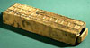
Wooden
gaming board, EA 24424 |
| Houses
were built of mud-brick, the walls whitewashed with plaster. Archaeological
evidence suggests rather sparse furnishings, with small boxes for
storing possessions, and ceramic vessels to hold water, beer, oil
and other liquids. A central reception room provided the focus of
larger houses, with private rooms leading off it. The kitchen was
often in the open air, while stairs would lead up to a roof. Only
some houses had a second storey. The house was not just a private
dwelling-place: crafts were undertaken, and animals and grain were
stored. Larger houses often featured a shrine. The objects displayed
here indicate some of the types of artefacts found in elite houses,
but many undoubtedly come from tombs, and were commissioned as burial
goods rather than ever having been used.
In
a similar manner, our knowledge of ancient Egyptian musical instruments,
toys and games is largely restricted to religious and funerary contexts.
Daily temple ritual, and the more grandiose festivals, would be
accompanied by music, which was particularly associated with the
goddess Hathor. The tombs of the wealthy were provided with model
and real instruments. In addition, the decorated walls depict musicians,
singers and dancers entertaining the wealthy at idealised lavish
banquets, but also music and song accompanying labour in the fields.
Identifying
toys in ancient Egypt is difficult, as many such objects undoubtedly
had ritual associations. However, excavations on town sites have
unearthed crude figures of animals and leather balls, in addition
to some fine examples. A range of board games are known from ancient
Egypt, including mehen, senet and `twenty-squares'.
Senet, in particular, had funerary associations, appearing
in parts of the Book of the Dead and being provided as part
of the tomb goods (see also the Ancient
Egypt web site). The game boards could be lavish examples with
inlaid decorations, or simple outlines scratched on stones.
|
Beauty
and Jewellery
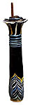
Glass kohl-tube in the from of a palm column, EA 2589 |
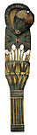
Wooden cosmetic spoon, EA 5965 (from the study collection) |
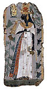
Tomb painting depicting Queen Ahmose-Nefertari, EA 37994 |
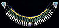
Faience necklace, EA 59334 |
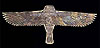
Gold hawk pectoral, EA 57323 |
| Beauty
was important among the elite as a way of displaying wealth and prosperity.
Ointments and oils were used to slow the skin's ageing. Cosmetics
and eye-paint also helped to prevent infections. In Predynastic times
(4000-3100 BC), dyes were used to restore hair colour. Wigs became
popular among the rich and were especially elaborate during the New
Kingdom (1560-1080 BC), when fine, delicately pleated, clothes were
worn.
Jewellery
both displayed wealth and invoked supernatural protection. It often
depicted gods and sacred symbols, while rare materials added to
their decorative aspect and boosted their magical powers. Surviving
jewellery is often in disordered pieces because the threads have
decayed. Tomb scenes help us to reconstruct its appearance and how
it was worn.
|
Approaching
the Gods
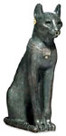
The Gayer-Anderson cat, EA 64391 |
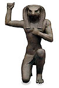
Bronze
figure of Horus of Pe, EA 11498 |
|
Bronze
figures of deities have become better understood through recent
scientific and archaeological research. Figures of deities were
placed as votive offerings by non-royal persons in sacred places,
particularly in temples of the Late Period onwards (after 664 BC).
Such pilgrims were often asking the god for a long life, health
or a child. Excavations in the Karnak temple complex at Thebes have
uncovered a vaulted subterranean structure with niches, designed
to receive figures of the god, many bronzes of Osiris have been
found in the area. However, bronzes were often gathered up and buried
in caches, still within the temple precinct. Other bronze figures
were used to adorn temple furniture, particularly the sacred barques
used in festival processions. The majority of Egyptian bronzes were
cast using the lost-wax method in which a mould was formed around
a wax model and later melted away, and the finest examples are inlaid
with metal, stone and glass, or decorated with gold or silver leaf.
Pages 1
| 2 | 3
| 4 | 5
|
|
|


{kind=link}